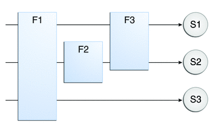

Filtering Requests and Responses
A filter is an object that can transform the header and content (or both) of a request or response. Filters differ from web components in that filters usually do not themselves create a response. Instead, a filter provides functionality that can be “attached” to any kind of web resource. Consequently, a filter should not have any dependencies on a web resource for which it is acting as a filter; this way it can be composed with more than one type of web resource.
The main tasks that a filter can perform are as follows:
Query the request and act accordingly.
Block the request-and-response pair from passing any further.
Modify the request headers and data. You do this by providing a customized version of the request.
Modify the response headers and data. You do this by providing a customized version of the response.
Interact with external resources.
Applications of filters include authentication, logging, image conversion, data compression, encryption, tokenizing streams, XML transformations, and so on.
You can configure a web resource to be filtered by a chain of zero, one, or more filters in a specific order. This chain is specified when the web application containing the component is deployed and is instantiated when a web container loads the component.
Programming Filters
The filtering API is defined by the Filter, FilterChain, and FilterConfig interfaces in the javax.servlet package. You define a filter by implementing the Filter interface.
The most important method in this interface is doFilter, which is passed request, response, and filter chain objects. This method can perform the following actions:
Examine the request headers.
Customize the request object if the filter wishes to modify request headers or data.
Customize the response object if the filter wishes to modify response headers or data.
Invoke the next entity in the filter chain. If the current filter is the last filter in the chain that ends with the target web component or static resource, the next entity is the resource at the end of the chain; otherwise, it is the next filter that was configured in the WAR. The filter invokes the next entity by calling the doFilter method on the chain object (passing in the request and response it was called with, or the wrapped versions it may have created). Alternatively, it can choose to block the request by not making the call to invoke the next entity. In the latter case, the filter is responsible for filling out the response.
Examine response headers after it has invoked the next filter in the chain.
Throw an exception to indicate an error in processing.
In addition to doFilter, you must implement the init and destroy methods. The init method is called by the container when the filter is instantiated. If you wish to pass initialization parameters to the filter, you retrieve them from the FilterConfig object passed to init.
Programming Customized Requests and Responses
There are many ways for a filter to modify a request or response. For example, a filter can add an attribute to the request or can insert data in the response.
A filter that modifies a response must usually capture the response before it is returned to the client. To do this, you pass a stand-in stream to the servlet that generates the response. The stand-in stream prevents the servlet from closing the original response stream when it completes and allows the filter to modify the servlet’s response.
To pass this stand-in stream to the servlet, the filter creates a response wrapper that overrides the getWriter or getOutputStream method to return this stand-in stream. The wrapper is passed to the doFilter method of the filter chain. Wrapper methods default to calling through to the wrapped request or response object.
To override request methods, you wrap the request in an object that extends ServletRequestWrapper or HttpServletRequestWrapper. To override response methods, you wrap the response in an object that extends ServletResponseWrapper or HttpServletResponseWrapper.
Specifying Filter Mappings
A web container uses filter mappings to decide how to apply filters to web resources. A filter mapping matches a filter to a web component by name, or to web resources by URL pattern. The filters are invoked in the order in which filter mappings appear in the filter mapping list of a WAR. You specify a filter mapping list for a WAR in its deployment descriptor, either with NetBeans IDE or by coding the list by hand with XML.
If you want to log every request to a web application, you map the hit counter filter to the URL pattern /*.
You can map a filter to one or more web resources and you can map more than one filter to a web resource. This is illustrated in Figure 10-1, where filter F1 is mapped to servlets S1, S2, and S3, filter F2 is mapped to servlet S2, and filter F3 is mapped to servlets S1 and S2.
Figure 10-1 Filter-to-Servlet Mapping
Recall that a filter chain is one of the objects passed to the doFilter method of a filter. This chain is formed indirectly by means of filter mappings. The order of the filters in the chain is the same as the order in which filter mappings appear in the web application deployment descriptor.
When a filter is mapped to servlet S1, the web container invokes the doFilter method of F1. The doFilter method of each filter in S1’s filter chain is invoked by the preceding filter in the chain by means of the chain.doFilter method. Because S1’s filter chain contains filters F1 and F3, F1’s call to chain.doFilter invokes the doFilter method of filter F3. When F3’s doFilter method completes, control returns to F1’s doFilter method.
To Specify Filter Mappings Using NetBeans IDE
To declare a filter and map it to a web resource using NetBeans IDE, do the following:
- Expand the application’s project node in the Project pane.
- Expand the Web Pages and WEB-INF nodes under the project node.
- Double-click web.xml.
- Click Filters at the top of the editor pane.
- Expand the Servlet Filters node in the editor pane.
- Click Add Filter Element to map the filter to a web resource by name or by URL pattern.
- In the Add Servlet Filter dialog, enter the name of the filter in the Filter Name field.
- Click Browse to locate the servlet class to which the filter applies.
You can include wildcard characters so that you can apply the filter to more than one servlet.
- Click OK.
- To constrain how the filter is applied to requests, follow these steps.
- Expand the Filter Mappings node.
- Select the filter from the list of filters.
- Click Add.
- In the Add Filter Mapping dialog, select one of the following dispatcher types:
REQUEST: Only when the request comes directly from the client
FORWARD: Only when the request has been forwarded to a component (see Transferring Control to Another Web Component)
INCLUDE: Only when the request is being processed by a component that has been included (see Including Other Resources in the Response)
ERROR: Only when the request is being processed with the error page mechanism (see Handling Servlet Errors)
You can direct the filter to be applied to any combination of the preceding situations by selecting multiple dispatcher types. If no types are specified, the default option is REQUEST.